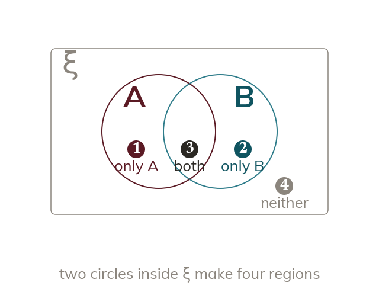

Two-set Venn diagrams
A two-set Venn diagram has two overlapping circles inside a rectangle. That makes four regions: only A, only B, both, and neither.
A two-set Venn diagram is a rectangle for ξ with two overlapping circles inside it, one for each set. That arrangement creates four regions: only in A, only in B, in both (the overlap), and in neither (inside the rectangle but outside both circles).